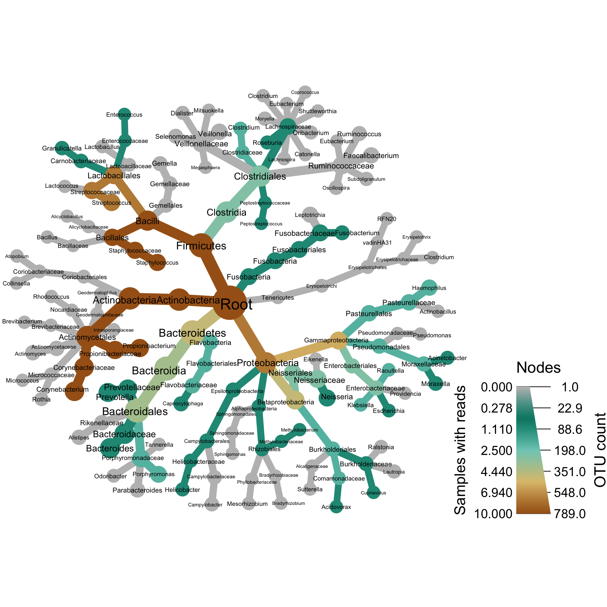
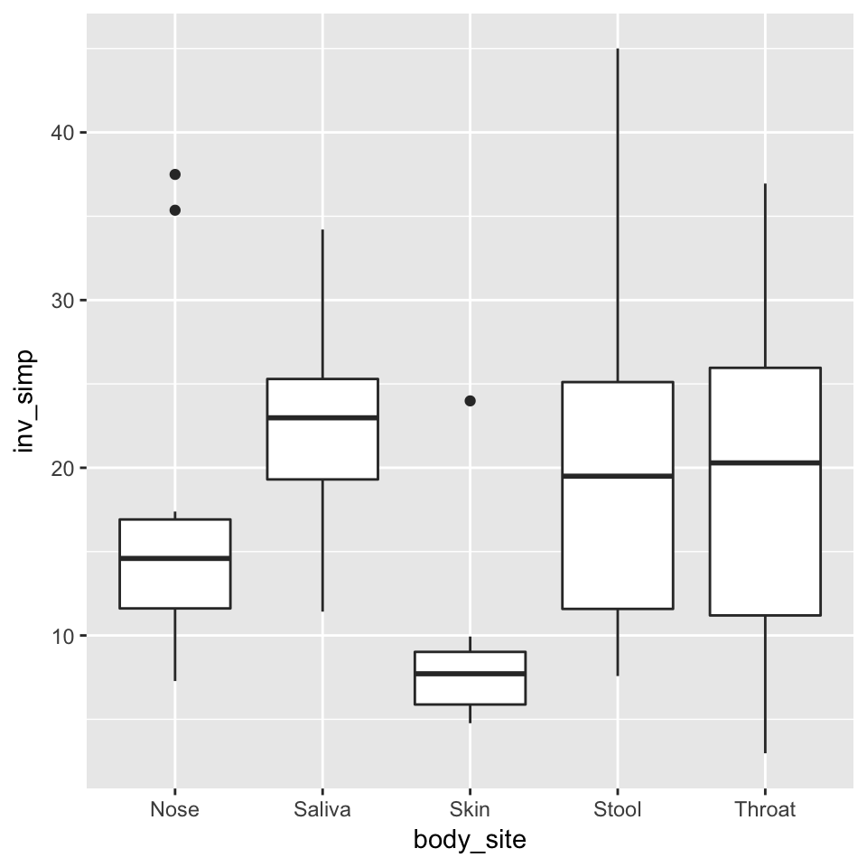
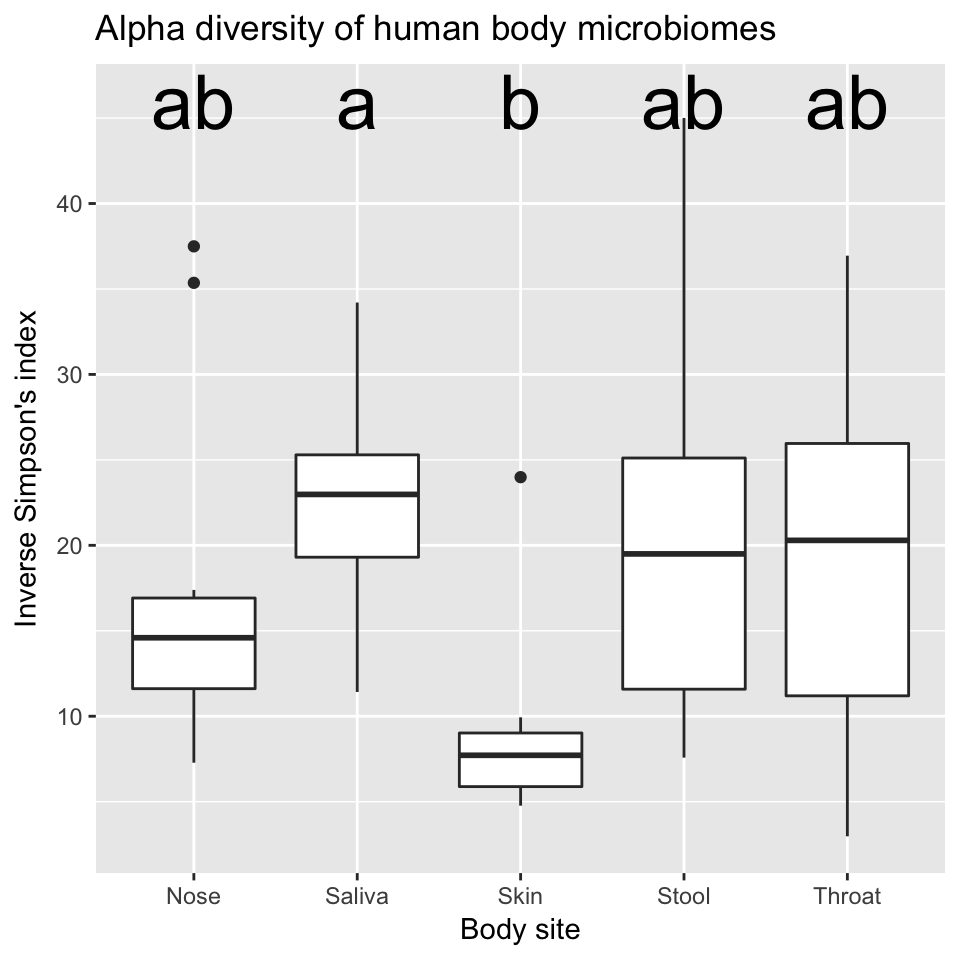

Example analysis
This is a short example analysis to give you a feel for the rest of the workshop. If something does not make sense now, don’t worry! We will cover everything shown here in greater detail later.
Parsing
The first step in any analysis is getting your data into R. This can be difficult for taxonomic data since it has a hierarchical component (i.e. the taxonomic tree). Metacoder has functions for parsing specific file formats used in metagenomics research. However, for this demonstration, we will be using a more all-purpose parser from the taxa package meant for tabular data.
Included in metacoder is an example dataset that is a subset of the Human Microbiome Project data. This dataset has two parts:
- An abundance matrix called
hmp_otus, with samples in columns and OTUs in rows - A sample information table called
hmp_samples, with samples as rows and columns of information describing the samples (e.g. gender).
This is the preferred way to encode this type of abundance information in metacoder and taxa. Lets take a look at this data:
library(metacoder)
print(hmp_otus)## # A tibble: 1,000 x 52
## otu_id
## <chr>
## 1 OTU_97.44820
## 2 OTU_97.4527
## 3 OTU_97.43162
## 4 OTU_97.43112
## 5 OTU_97.43346
## 6 OTU_97.44222
## 7 OTU_97.44176
## 8 OTU_97.37553
## 9 OTU_97.30800
## 10 OTU_97.15266
## # ... with 990 more rows, and 51 more variables: lineage <chr>, `700035949` <int>,
## # `700097855` <int>, `700100489` <int>, `700111314` <int>, `700033744` <int>,
## # `700109581` <int>, `700111044` <int>, `700101365` <int>, `700100431` <int>,
## # `700016050` <int>, `700032425` <int>, `700024855` <int>, `700103488` <int>,
## # `700096869` <int>, `700107379` <int>, `700096422` <int>, `700102417` <int>,
## # `700114168` <int>, `700037540` <int>, `700106397` <int>, `700113498` <int>,
## # `700033743` <int>, `700105205` <int>, `700024238` <int>, `700034183` <int>,
## # `700038390` <int>, `700015973` <int>, `700038124` <int>, `700107206` <int>,
## # `700037403` <int>, `700098429` <int>, `700101224` <int>, `700114615` <int>,
## # `700024234` <int>, `700108596` <int>, `700101076` <int>, `700105882` <int>,
## # `700016902` <int>, `700102242` <int>, `700038231` <int>, `700109394` <int>,
## # `700102530` <int>, `700108229` <int>, `700099013` <int>, `700098680` <int>,
## # `700106938` <int>, `700014916` <int>, `700095535` <int>, `700102367` <int>,
## # `700101358` <int>print(hmp_samples)## # A tibble: 50 x 3
## # Groups: body_site, sex [10]
## sample_id sex body_site
## <chr> <chr> <chr>
## 1 700035949 female Nose
## 2 700097855 female Nose
## 3 700100489 female Nose
## 4 700111314 female Nose
## 5 700033744 female Nose
## 6 700109581 male Nose
## 7 700111044 male Nose
## 8 700101365 male Nose
## 9 700100431 male Nose
## 10 700016050 male Nose
## # ... with 40 more rowsWe can parse the taxonomic information in the abundance matrix using a parser from taxa:
obj <- parse_tax_data(hmp_otus,
class_cols = "lineage", # the column that contains taxonomic information
class_sep = ";", # The character used to separate taxa in the classification
class_regex = "^(.+)__(.+)$", # Regex identifying where the data for each taxon is
class_key = c(tax_rank = "info", # A key describing each regex capture group
tax_name = "taxon_name"))This returns a taxmap object. The taxmap class is designed to store any number of tables, lists, or vectors associated with taxonomic information and facilitate manipulating the data in a cohesive way. Here is what that object looks like:
print(obj)## <Taxmap>
## 174 taxa: ab. Root, ac. Proteobacteria ... gr. Blautia, gs. Clostridium
## 174 edges: NA->ab, ab->ac, ab->ad ... dk->gp, cm->gq, cf->gr, cw->gs
## 2 data sets:
## tax_data:
## # A tibble: 1,000 x 53
## taxon_id otu_id
## <chr> <chr>
## 1 dm OTU_97.44820
## 2 dn OTU_97.4527
## 3 do OTU_97.43162
## # ... with 997 more rows, and 51 more variables: lineage <chr>,
## # `700035949` <int>, `700097855` <int>, `700100489` <int>, `700111314` <int>,
## # `700033744` <int>, `700109581` <int>, `700111044` <int>, `700101365` <int>,
## # `700100431` <int>, `700016050` <int>, `700032425` <int>, `700024855` <int>,
## # `700103488` <int>, `700096869` <int>, `700107379` <int>, `700096422` <int>,
## # `700102417` <int>, `700114168` <int>, `700037540` <int>, `700106397` <int>,
## # `700113498` <int>, `700033743` <int>, `700105205` <int>, `700024238` <int>,
## # `700034183` <int>, `700038390` <int>, `700015973` <int>, `700038124` <int>,
## # `700107206` <int>, `700037403` <int>, `700098429` <int>, `700101224` <int>,
## # `700114615` <int>, `700024234` <int>, `700108596` <int>, `700101076` <int>,
## # `700105882` <int>, `700016902` <int>, `700102242` <int>, `700038231` <int>,
## # `700109394` <int>, `700102530` <int>, `700108229` <int>, `700099013` <int>,
## # `700098680` <int>, `700106938` <int>, `700014916` <int>, `700095535` <int>,
## # `700102367` <int>, `700101358` <int>
## class_data:
## # A tibble: 5,922 x 5
## taxon_id input_index tax_rank tax_name regex_match
## * <chr> <int> <chr> <chr> <chr>
## 1 ab 1 r Root r__Root
## 2 ac 1 p Proteobacteria p__Proteobacteria
## 3 aj 1 c Gammaproteobacteria c__Gammaproteobacteria
## # ... with 5,919 more rows
## 0 functions:Abundance matrix manipulations
Removing low-abundance counts
Low-abundance sequences might be the result of sequencing error, so typically we remove any counts/OTUs with less than some number of reads. Lets set all counts with less than 5 reads to zero:
obj$data$tax_data <- zero_low_counts(obj, "tax_data", min_count = 5)## Converting to zero all counts less than 5.## No `cols` specified, so using all numeric columns:
## 700035949, 700097855, 700100489 ... 700095535, 700102367, 700101358## Zeroing 4325 of 50000 counts less than 5.There might now be some OTUs with no “real” reads. Lets check:
no_reads <- rowSums(obj$data$tax_data[, hmp_samples$sample_id]) == 0
sum(no_reads)## [1] 211It appears that 211 of 1000 OTUs now have no reads. We can remove those OTUs and their associated taxa with filter_obs:
obj <- filter_obs(obj, "tax_data", ! no_reads, drop_taxa = TRUE)
print(obj)## <Taxmap>
## 155 taxa: ab. Root ... gq. Collinsella, gs. Clostridium
## 155 edges: NA->ab, ab->ac, ab->ad ... dj->gn, dk->gp, cm->gq, cw->gs
## 2 data sets:
## tax_data:
## # A tibble: 789 x 51
## taxon_id `700035949` `700097855` `700100489` `700111314` `700033744`
## <chr> <dbl> <dbl> <dbl> <dbl> <dbl>
## 1 dm 0 0 0 0 0
## 2 dn 0 0 0 0 0
## 3 do 0 0 0 0 0
## # ... with 786 more rows, and 45 more variables: `700109581` <dbl>,
## # `700111044` <dbl>, `700101365` <dbl>, `700100431` <dbl>, `700016050` <dbl>,
## # `700032425` <dbl>, `700024855` <dbl>, `700103488` <dbl>, `700096869` <dbl>,
## # `700107379` <dbl>, `700096422` <dbl>, `700102417` <dbl>, `700114168` <dbl>,
## # `700037540` <dbl>, `700106397` <dbl>, `700113498` <dbl>, `700033743` <dbl>,
## # `700105205` <dbl>, `700024238` <dbl>, `700034183` <dbl>, `700038390` <dbl>,
## # `700015973` <dbl>, `700038124` <dbl>, `700107206` <dbl>, `700037403` <dbl>,
## # `700098429` <dbl>, `700101224` <dbl>, `700114615` <dbl>, `700024234` <dbl>,
## # `700108596` <dbl>, `700101076` <dbl>, `700105882` <dbl>, `700016902` <dbl>,
## # `700102242` <dbl>, `700038231` <dbl>, `700109394` <dbl>, `700102530` <dbl>,
## # `700108229` <dbl>, `700099013` <dbl>, `700098680` <dbl>, `700106938` <dbl>,
## # `700014916` <dbl>, `700095535` <dbl>, `700102367` <dbl>, `700101358` <dbl>
## class_data:
## # A tibble: 5,922 x 5
## taxon_id input_index tax_rank tax_name regex_match
## * <chr> <int> <chr> <chr> <chr>
## 1 ab 1 r Root r__Root
## 2 ac 1 p Proteobacteria p__Proteobacteria
## 3 aj 1 c Gammaproteobacteria c__Gammaproteobacteria
## # ... with 5,919 more rows
## 0 functions:Note how there are fewer taxa now, as well as fewer OTUs. This coordinated manipulation of taxonomic and abundance data is one of the main benefits of using the taxmap class.
Accounting for un-even sampling
These are raw counts, but people typically work with rarefied counts or proportions to avoid sampling depth biasing the results. The function rarefy_obs will return the rarefied counts for a table in a taxmap object, but lets use proportions for this demonstration:
obj$data$tax_data <- calc_obs_props(obj, "tax_data")## No `cols` specified, so using all numeric columns:
## 700035949, 700097855, 700100489 ... 700095535, 700102367, 700101358print(obj)## <Taxmap>
## 155 taxa: ab. Root ... gq. Collinsella, gs. Clostridium
## 155 edges: NA->ab, ab->ac, ab->ad ... dj->gn, dk->gp, cm->gq, cw->gs
## 2 data sets:
## tax_data:
## # A tibble: 789 x 51
## taxon_id `700035949` `700097855` `700100489` `700111314` `700033744`
## <chr> <dbl> <dbl> <dbl> <dbl> <dbl>
## 1 dm 0 0 0 0 0
## 2 dn 0 0 0 0 0
## 3 do 0 0 0 0 0
## # ... with 786 more rows, and 45 more variables: `700109581` <dbl>,
## # `700111044` <dbl>, `700101365` <dbl>, `700100431` <dbl>, `700016050` <dbl>,
## # `700032425` <dbl>, `700024855` <dbl>, `700103488` <dbl>, `700096869` <dbl>,
## # `700107379` <dbl>, `700096422` <dbl>, `700102417` <dbl>, `700114168` <dbl>,
## # `700037540` <dbl>, `700106397` <dbl>, `700113498` <dbl>, `700033743` <dbl>,
## # `700105205` <dbl>, `700024238` <dbl>, `700034183` <dbl>, `700038390` <dbl>,
## # `700015973` <dbl>, `700038124` <dbl>, `700107206` <dbl>, `700037403` <dbl>,
## # `700098429` <dbl>, `700101224` <dbl>, `700114615` <dbl>, `700024234` <dbl>,
## # `700108596` <dbl>, `700101076` <dbl>, `700105882` <dbl>, `700016902` <dbl>,
## # `700102242` <dbl>, `700038231` <dbl>, `700109394` <dbl>, `700102530` <dbl>,
## # `700108229` <dbl>, `700099013` <dbl>, `700098680` <dbl>, `700106938` <dbl>,
## # `700014916` <dbl>, `700095535` <dbl>, `700102367` <dbl>, `700101358` <dbl>
## class_data:
## # A tibble: 5,922 x 5
## taxon_id input_index tax_rank tax_name regex_match
## * <chr> <int> <chr> <chr> <chr>
## 1 ab 1 r Root r__Root
## 2 ac 1 p Proteobacteria p__Proteobacteria
## 3 aj 1 c Gammaproteobacteria c__Gammaproteobacteria
## # ... with 5,919 more rows
## 0 functions:Getting per-taxon information
Currently, we have values for the abundance of each OTU, not each taxon. To get information on the taxa, we can sum the abundance per-taxon like so:
obj$data$tax_abund <- calc_taxon_abund(obj, "tax_data",
cols = hmp_samples$sample_id)## Summing per-taxon counts from 50 columns for 155 taxaNote that there is now an additional table with one row per taxon.
print(obj)## <Taxmap>
## 155 taxa: ab. Root ... gq. Collinsella, gs. Clostridium
## 155 edges: NA->ab, ab->ac, ab->ad ... dj->gn, dk->gp, cm->gq, cw->gs
## 3 data sets:
## tax_data:
## # A tibble: 789 x 51
## taxon_id `700035949` `700097855` `700100489` `700111314` `700033744`
## <chr> <dbl> <dbl> <dbl> <dbl> <dbl>
## 1 dm 0 0 0 0 0
## 2 dn 0 0 0 0 0
## 3 do 0 0 0 0 0
## # ... with 786 more rows, and 45 more variables: `700109581` <dbl>,
## # `700111044` <dbl>, `700101365` <dbl>, `700100431` <dbl>, `700016050` <dbl>,
## # `700032425` <dbl>, `700024855` <dbl>, `700103488` <dbl>, `700096869` <dbl>,
## # `700107379` <dbl>, `700096422` <dbl>, `700102417` <dbl>, `700114168` <dbl>,
## # `700037540` <dbl>, `700106397` <dbl>, `700113498` <dbl>, `700033743` <dbl>,
## # `700105205` <dbl>, `700024238` <dbl>, `700034183` <dbl>, `700038390` <dbl>,
## # `700015973` <dbl>, `700038124` <dbl>, `700107206` <dbl>, `700037403` <dbl>,
## # `700098429` <dbl>, `700101224` <dbl>, `700114615` <dbl>, `700024234` <dbl>,
## # `700108596` <dbl>, `700101076` <dbl>, `700105882` <dbl>, `700016902` <dbl>,
## # `700102242` <dbl>, `700038231` <dbl>, `700109394` <dbl>, `700102530` <dbl>,
## # `700108229` <dbl>, `700099013` <dbl>, `700098680` <dbl>, `700106938` <dbl>,
## # `700014916` <dbl>, `700095535` <dbl>, `700102367` <dbl>, `700101358` <dbl>
## class_data:
## # A tibble: 5,922 x 5
## taxon_id input_index tax_rank tax_name regex_match
## * <chr> <int> <chr> <chr> <chr>
## 1 ab 1 r Root r__Root
## 2 ac 1 p Proteobacteria p__Proteobacteria
## 3 aj 1 c Gammaproteobacteria c__Gammaproteobacteria
## # ... with 5,919 more rows
## tax_abund:
## # A tibble: 155 x 51
## taxon_id `700035949` `700097855` `700100489` `700111314` `700033744`
## * <chr> <dbl> <dbl> <dbl> <dbl> <dbl>
## 1 ab 1.000000 1.000000000 1 1.00000000 1.0000000
## 2 ac 0.206089 0.026180573 0 0.25198413 0.2245972
## 3 ad 0.000000 0.002691461 0 0.04166667 0.0000000
## # ... with 152 more rows, and 45 more variables: `700109581` <dbl>,
## # `700111044` <dbl>, `700101365` <dbl>, `700100431` <dbl>, `700016050` <dbl>,
## # `700032425` <dbl>, `700024855` <dbl>, `700103488` <dbl>, `700096869` <dbl>,
## # `700107379` <dbl>, `700096422` <dbl>, `700102417` <dbl>, `700114168` <dbl>,
## # `700037540` <dbl>, `700106397` <dbl>, `700113498` <dbl>, `700033743` <dbl>,
## # `700105205` <dbl>, `700024238` <dbl>, `700034183` <dbl>, `700038390` <dbl>,
## # `700015973` <dbl>, `700038124` <dbl>, `700107206` <dbl>, `700037403` <dbl>,
## # `700098429` <dbl>, `700101224` <dbl>, `700114615` <dbl>, `700024234` <dbl>,
## # `700108596` <dbl>, `700101076` <dbl>, `700105882` <dbl>, `700016902` <dbl>,
## # `700102242` <dbl>, `700038231` <dbl>, `700109394` <dbl>, `700102530` <dbl>,
## # `700108229` <dbl>, `700099013` <dbl>, `700098680` <dbl>, `700106938` <dbl>,
## # `700014916` <dbl>, `700095535` <dbl>, `700102367` <dbl>, `700101358` <dbl>
## 0 functions:We can also easily calculate the number of samples have reads for each taxon:
obj$data$tax_occ <- calc_n_samples(obj, "tax_abund", groups = hmp_samples$body_site)## No `cols` specified, so using all numeric columns:
## 700035949, 700097855, 700100489 ... 700095535, 700102367, 700101358print(obj)## <Taxmap>
## 155 taxa: ab. Root ... gq. Collinsella, gs. Clostridium
## 155 edges: NA->ab, ab->ac, ab->ad ... dj->gn, dk->gp, cm->gq, cw->gs
## 4 data sets:
## tax_data:
## # A tibble: 789 x 51
## taxon_id `700035949` `700097855` `700100489` `700111314` `700033744`
## <chr> <dbl> <dbl> <dbl> <dbl> <dbl>
## 1 dm 0 0 0 0 0
## 2 dn 0 0 0 0 0
## 3 do 0 0 0 0 0
## # ... with 786 more rows, and 45 more variables: `700109581` <dbl>,
## # `700111044` <dbl>, `700101365` <dbl>, `700100431` <dbl>, `700016050` <dbl>,
## # `700032425` <dbl>, `700024855` <dbl>, `700103488` <dbl>, `700096869` <dbl>,
## # `700107379` <dbl>, `700096422` <dbl>, `700102417` <dbl>, `700114168` <dbl>,
## # `700037540` <dbl>, `700106397` <dbl>, `700113498` <dbl>, `700033743` <dbl>,
## # `700105205` <dbl>, `700024238` <dbl>, `700034183` <dbl>, `700038390` <dbl>,
## # `700015973` <dbl>, `700038124` <dbl>, `700107206` <dbl>, `700037403` <dbl>,
## # `700098429` <dbl>, `700101224` <dbl>, `700114615` <dbl>, `700024234` <dbl>,
## # `700108596` <dbl>, `700101076` <dbl>, `700105882` <dbl>, `700016902` <dbl>,
## # `700102242` <dbl>, `700038231` <dbl>, `700109394` <dbl>, `700102530` <dbl>,
## # `700108229` <dbl>, `700099013` <dbl>, `700098680` <dbl>, `700106938` <dbl>,
## # `700014916` <dbl>, `700095535` <dbl>, `700102367` <dbl>, `700101358` <dbl>
## class_data:
## # A tibble: 5,922 x 5
## taxon_id input_index tax_rank tax_name regex_match
## * <chr> <int> <chr> <chr> <chr>
## 1 ab 1 r Root r__Root
## 2 ac 1 p Proteobacteria p__Proteobacteria
## 3 aj 1 c Gammaproteobacteria c__Gammaproteobacteria
## # ... with 5,919 more rows
## tax_abund:
## # A tibble: 155 x 51
## taxon_id `700035949` `700097855` `700100489` `700111314` `700033744`
## * <chr> <dbl> <dbl> <dbl> <dbl> <dbl>
## 1 ab 1.000000 1.000000000 1 1.00000000 1.0000000
## 2 ac 0.206089 0.026180573 0 0.25198413 0.2245972
## 3 ad 0.000000 0.002691461 0 0.04166667 0.0000000
## # ... with 152 more rows, and 45 more variables: `700109581` <dbl>,
## # `700111044` <dbl>, `700101365` <dbl>, `700100431` <dbl>, `700016050` <dbl>,
## # `700032425` <dbl>, `700024855` <dbl>, `700103488` <dbl>, `700096869` <dbl>,
## # `700107379` <dbl>, `700096422` <dbl>, `700102417` <dbl>, `700114168` <dbl>,
## # `700037540` <dbl>, `700106397` <dbl>, `700113498` <dbl>, `700033743` <dbl>,
## # `700105205` <dbl>, `700024238` <dbl>, `700034183` <dbl>, `700038390` <dbl>,
## # `700015973` <dbl>, `700038124` <dbl>, `700107206` <dbl>, `700037403` <dbl>,
## # `700098429` <dbl>, `700101224` <dbl>, `700114615` <dbl>, `700024234` <dbl>,
## # `700108596` <dbl>, `700101076` <dbl>, `700105882` <dbl>, `700016902` <dbl>,
## # `700102242` <dbl>, `700038231` <dbl>, `700109394` <dbl>, `700102530` <dbl>,
## # `700108229` <dbl>, `700099013` <dbl>, `700098680` <dbl>, `700106938` <dbl>,
## # `700014916` <dbl>, `700095535` <dbl>, `700102367` <dbl>, `700101358` <dbl>
## tax_occ:
## # A tibble: 155 x 6
## taxon_id Nose Saliva Skin Stool Throat
## <chr> <int> <int> <int> <int> <int>
## 1 ab 10 10 10 10 10
## 2 ac 8 10 9 2 10
## 3 ad 5 10 8 10 10
## # ... with 152 more rows
## 0 functions:Plotting taxonomic data
Now that we have per-taxon information, we can plot the information using heat trees. Heat trees are what we call taxonomic trees in which the size and color of tree parts correspond to some statistic of interest. The code below plots the number of “Nose” samples that have reads for each taxon as the size of each taxon. It also plots the number of OTUs assigned to each taxon in the overall dataset as color.
heat_tree(obj,
node_label = taxon_names,
node_size = n_obs,
node_color = Nose,
node_size_axis_label = "OTU count",
node_color_axis_label = "Samples with reads",
layout = "davidson-harel", # The primary layout algorithm
initial_layout = "reingold-tilford") # The layout algorithm that initializes node locations
Note how we did not have to specify the full path to the variable “Nose”, but just its name. This is a shorthand for convenience. We could have made the same plot using this command:
heat_tree(obj,
node_label = obj$taxon_names(),
node_size = obj$n_obs(),
node_color = obj$data$tax_occ$Nose,
node_size_axis_label = "OTU count",
node_color_axis_label = "Samples with reads",
layout = "davidson-harel", # The primary layout algorithm
initial_layout = "reingold-tilford") # The layout algorithm that initializes node locationsThis is known as non-standard evaluation in programmer jargon and will be used in many functions throughout this workshop.
Alpha diversity
Alpha diversity is a measure of the diversity within each sample or group of samples. It can be calculated at any rank of the taxonomy, but it is usually calculated at the species or OTU “rank”. There are multiple methods used to calculate a value to represent alpha diversity. The simplest is just the number of species, but the ones used most often factor in how common each species is as well. Below, we calculate the alpha diversity of OTUs using the Inverse Simpson Index using the package vegan.
hmp_samples$inv_simp <- vegan::diversity(obj$data$tax_data[, hmp_samples$sample_id],
index = "invsimpson",
MARGIN = 2)Adding this on to the sample data makes it easy to use the sample information in graphing. Lets compare the alpha diversity of samples from males and females using ggplot2, a popular R package for plotting.
library(ggplot2)## Warning: package 'ggplot2' was built under R version 3.3.2##
## Attaching package: 'ggplot2'## The following object is masked from 'package:taxa':
##
## map_dataggplot(hmp_samples, aes(x = sex, y = inv_simp)) +
geom_boxplot()
Not much difference there, as you might expect. We can also compare body sites:
ggplot(hmp_samples, aes(x = body_site, y = inv_simp)) +
geom_boxplot()
Thats more interesting; skin has much lower diversity than any of the wetter areas, which makes sense. Lets see if thats a significant difference using an ANOVA.
anova_result <- aov(inv_simp ~ body_site, hmp_samples)
summary(anova_result)## Df Sum Sq Mean Sq F value Pr(>F)
## body_site 4 1155 288.63 3.247 0.0201 *
## Residuals 45 4000 88.89
## ---
## Signif. codes: 0 '***' 0.001 '**' 0.01 '*' 0.05 '.' 0.1 ' ' 1That tells that at least one of the body site means is different from the other, but not which one (although we can make a good guess). A Tukey’s HSD test can compare each site to every other and tell us which are significantly different. Although base R has a Tukey’s HSD function called TukeyHSD, we will use one from the package agricolae since it supplies grouping codes that are useful for graphing.
library(agricolae)## Warning: package 'agricolae' was built under R version 3.3.2tukey_result <- HSD.test(anova_result, "body_site", group = TRUE)
print(tukey_result)## $statistics
## MSerror Df Mean CV MSD
## 88.89491 45 17.94757 52.53306 11.98101
##
## $parameters
## test name.t ntr StudentizedRange alpha
## Tukey body_site 5 4.018417 0.05
##
## $means
## inv_simp std r Min Max Q25 Q50 Q75
## Nose 17.662798 10.332621 10 7.281343 37.49351 11.612608 14.592358 16.916579
## Saliva 22.543018 6.230297 10 11.419763 34.20763 19.304662 22.978894 25.294143
## Skin 8.857022 5.585280 10 4.765705 23.98838 5.881698 7.714934 9.019116
## Stool 20.647132 11.392198 10 7.578868 45.00703 11.582727 19.498076 25.109358
## Throat 20.027902 11.743822 10 2.973287 36.94885 11.194047 20.290096 25.959168
##
## $comparison
## NULL
##
## $groups
## inv_simp groups
## Saliva 22.543018 a
## Stool 20.647132 ab
## Throat 20.027902 ab
## Nose 17.662798 ab
## Skin 8.857022 b
##
## attr(,"class")
## [1] "group"We are interested in the $groups table that says which sites are different. With a little tweaking, we can add this data to the graph we made. Lets add some nicer text as well.
group_data <- tukey_result$groups[order(rownames(tukey_result$groups)),]
ggplot(hmp_samples, aes(x = body_site, y = inv_simp)) +
geom_text(data = data.frame(),
aes(x = rownames(group_data), y = max(hmp_samples$inv_simp) + 1, label = group_data$groups),
col = 'black',
size = 10) +
geom_boxplot() +
ggtitle("Alpha diversity of human body sites") +
xlab("Body site") +
ylab("Inverse Simpson Index")
This tells us that samples from the siliva and skin are significantly different from each other, but not significantly different from anything else.
Comparing two treatments/groups
Usually we are interested in how groups of samples compare. For example, we might want to know which taxa differ between the nose and throat, or between men and women. The function compare_groups facilitates these comparisons:
obj$data$diff_table <- compare_groups(obj,
dataset = "tax_abund",
cols = hmp_samples$sample_id, # What columns of sample data to use
groups = hmp_samples$sex) # What category each sample is assigned to
print(obj$data$diff_table)## # A tibble: 155 x 7
## taxon_id treatment_1 treatment_2 log2_median_ratio median_diff mean_diff
## * <chr> <chr> <chr> <dbl> <dbl> <dbl>
## 1 ab female male 0.0000000 0.00000000 0.000000000
## 2 ac female male 0.3797759 0.02290828 0.037866058
## 3 ad female male -0.4341494 -0.04486884 -0.019886673
## 4 ae female male -1.6833967 -0.04748394 -0.075250940
## 5 af female male 0.6487058 0.11593508 0.061361212
## 6 ag female male 0.0000000 0.00000000 -0.002751537
## 7 ah female male 0.0000000 0.00000000 -0.001404065
## 8 aj female male 1.2392100 0.01622017 -0.012872601
## 9 ak female male 0.0000000 0.00000000 0.001209339
## 10 al female male -0.5423022 -0.05409843 -0.021096012
## # ... with 145 more rows, and 1 more variables: wilcox_p_value <dbl>We can use this information to create what we call a differential heat tree, which indicates which taxa are more abundant in each treatment:
heat_tree(obj,
node_label = taxon_names,
node_size = n_obs, # n_obs is a function that calculates, in this case, the number of OTUs per taxon
node_color = log2_median_ratio, # A column from `obj$data$diff_table`
node_color_interval = c(-2, 2), # The range of `log2_median_ratio` to display
node_color_range = c("cyan", "gray", "tan"), # The color palette used
node_size_axis_label = "OTU count",
node_color_axis_label = "Log 2 ratio of median proportions",
layout = "davidson-harel", # The primary layout algorithm
initial_layout = "reingold-tilford") # The layout algorithm that initializes node locations
In this case, taxa colored tan are more abundant in women and those colored blue are more abundant in men. Note that we have not taken into account statistics significance when showing this, so lets do that. First, we need to correct for multiple comparisons:
obj$data$diff_table$wilcox_p_value <- p.adjust(obj$data$diff_table$wilcox_p_value,
method = "fdr")If we then look at the distribution of p-values, we can see that none are even close to significant:
range(obj$data$diff_table$wilcox_p_value , finite = TRUE) ## [1] 0.8029954 1.0000000There is no need to graph this, but if there still were some significant differences, we could set any difference that is not significant to zero and repeat the last heat_tree command.
Comparing any number of treatments/groups
A single differential heat tree can compare two treatments, but what if you have more? Then we can make a matrix of heat trees, one for each pairwise comparison of treatments like so:
obj$data$diff_table <- compare_groups(obj, dataset = "tax_abund",
cols = hmp_samples$sample_id,
groups = hmp_samples$body_site)
print(obj$data$diff_table)## # A tibble: 1,550 x 7
## taxon_id treatment_1 treatment_2 log2_median_ratio median_diff mean_diff
## * <chr> <chr> <chr> <dbl> <dbl> <dbl>
## 1 ab Nose Saliva 0.000000 0.00000000 0.00000000
## 2 ac Nose Saliva -2.618019 -0.16722090 -0.12750702
## 3 ad Nose Saliva -7.676151 -0.27389312 -0.26514780
## 4 ae Nose Saliva 5.364517 0.61566065 0.59543646
## 5 af Nose Saliva -1.231507 -0.26011619 -0.15915469
## 6 ag Nose Saliva -Inf -0.02283698 -0.04362694
## 7 ah Nose Saliva 0.000000 0.00000000 0.00000000
## 8 aj Nose Saliva -3.829347 -0.10290595 -0.08029815
## 9 ak Nose Saliva -Inf -0.01735820 -0.01744046
## 10 al Nose Saliva -Inf -0.25840070 -0.24770735
## # ... with 1,540 more rows, and 1 more variables: wilcox_p_value <dbl>There is a special function to plot this type of data called heat_tree_matrix:
heat_tree_matrix(obj,
dataset = "diff_table",
node_size = n_obs, # n_obs is a function that calculates, in this case, the number of OTUs per taxon
node_label = taxon_names,
node_color = log2_median_ratio, # A column from `obj$data$diff_table`
node_color_range = diverging_palette(), # The built-in palette for diverging data
node_color_trans = "linear", # The default is scaled by circle area
node_color_interval = c(-3, 3), # The range of `log2_median_ratio` to display
edge_color_interval = c(-3, 3), # The range of `log2_median_ratio` to display
node_size_axis_label = "Number of OTUs",
node_color_axis_label = "Log2 ratio median proportions",
layout = "davidson-harel", # The primary layout algorithm
initial_layout = "reingold-tilford") # The layout algorithm that initializes node locations
Session information:

Analysis of Microbiome Community Data in R by The Grunwald lab and the USDA Horticultural Crops Research Unit is licensed under a Creative Commons Attribution-ShareAlike 4.0 International License.
Based on a work at https://github.com/grunwaldlab/analysis_of_microbiome_community_data_in_r.